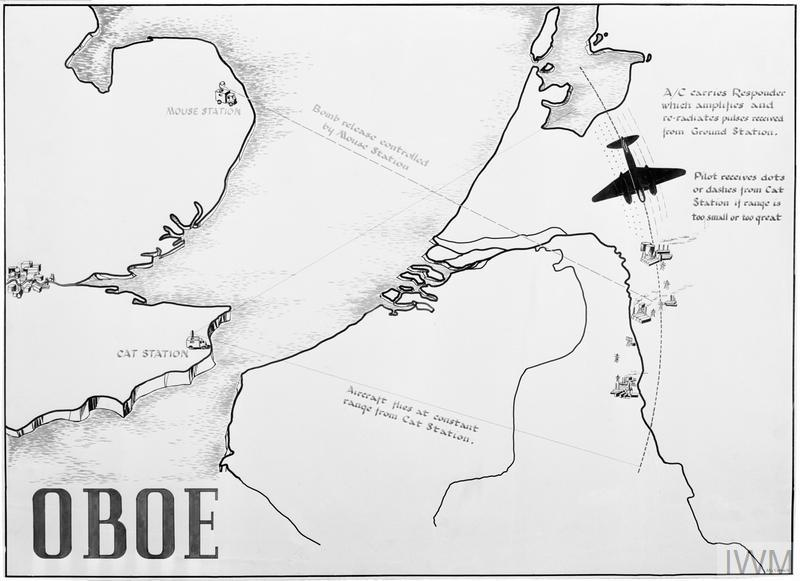
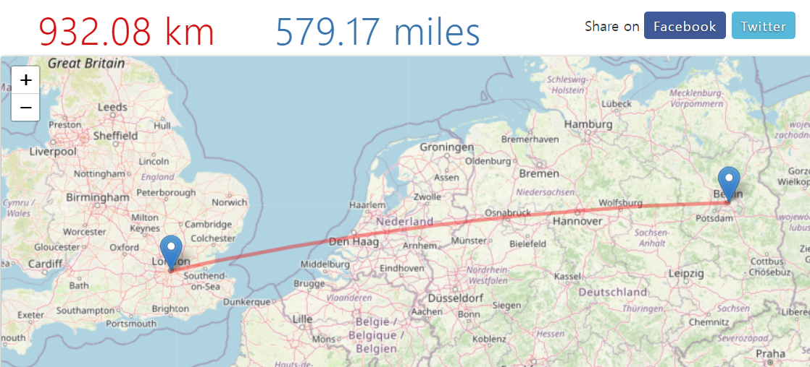
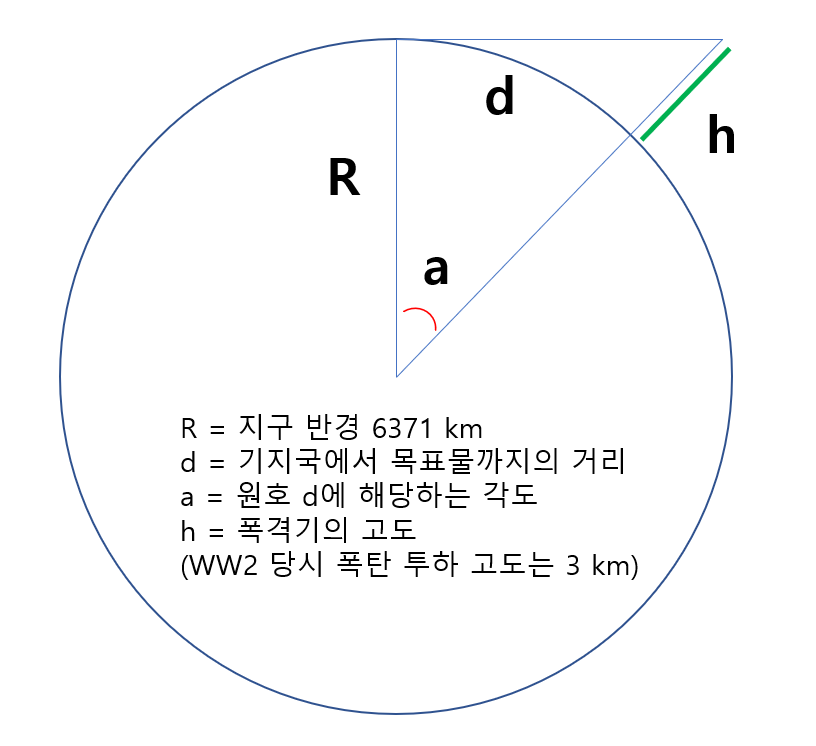
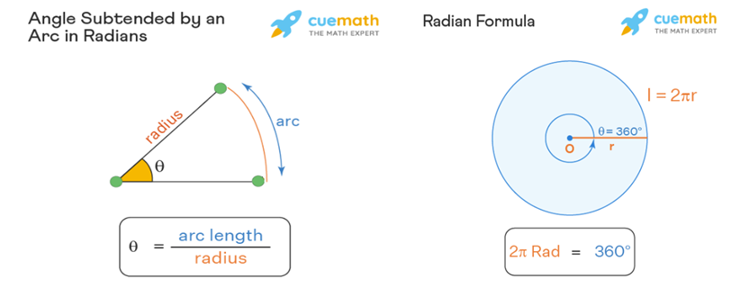
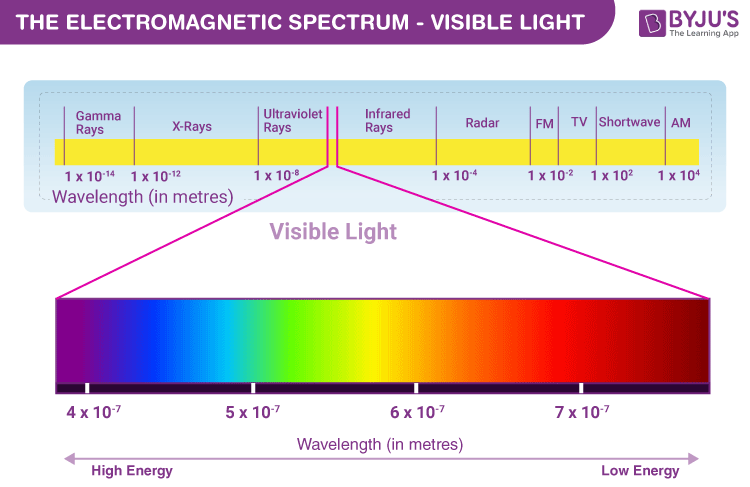
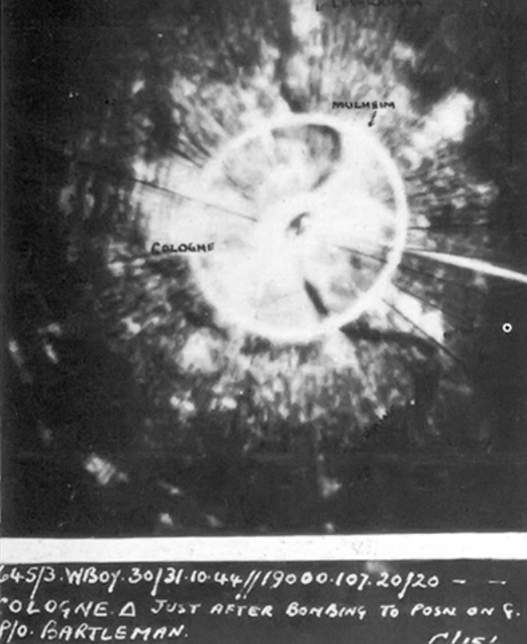
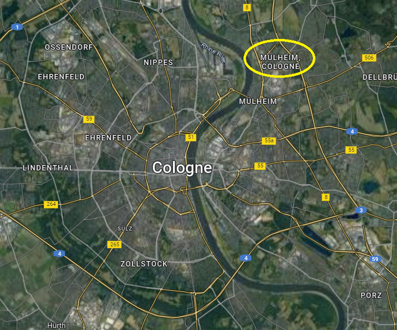

레이더 개발 이야기 (38) - 바보야, 지구는 둥글쟎아!
게시: 2023-07-13T06:30:09+09:00
<Gee로는 부족해!> Gee를 이용한 폭격을 시작하고서도 로열 에어포스 폭격기 사령부(Bomber Command)는 그렇게까지 행복해하지 않았음. 이유는 일단 정확도. Gee의 개념 특성상, 기지국에서 멀면 멀수록 정확도가 점점 더 떨어짐. 그러니 격추된 영국 랭카스터 폭격기에서 수거한 Gee 수신기를 수리하여 자국 폭격기에 싣고 영국의 밤 하늘로 날아온 루프트바페에게는 Gee가 꽤 정밀한 폭격 유도를 해주었으나, 정작 정품 사용자인 로열 에어포스 폭격기들은 머나먼 독일에서는 꽤나 부정확했음. 독일 쾰른 상공에서는 오차가 1.6km까지도 벌어졌는데, 당시 폭탄의 살상 범위는 건물의 경우 10m 이내, 사람의 경우 100m 이내였기 때문에 이건 정밀 폭격과는 거리가 멀었음. 그래서 그런 정밀도를 높이기 위해 로열 에어포스는 갖은 노력을 다 함. 곧 이어 오보에(Oboe)라는 새로운 시스템을 만들었는데, 이는 폭격기에는 수신기만을 장착한 Gee와는 달리 폭격기에 무선응답기(transponder)를 장착한 시스템. 오보에는 WW2 중 연합군이 사용한 전파 항법 시스템 중 가장 높은 정밀도를 보여주기는 했으나, 이는 특성상 한 번에 딱 1대의 폭격기만 유도가 가능. 그래서 로열 에어포스 폭격기 편대는 맨 앞에 선 PathFinder 폭격기가 오보에의 유도에 따라 소이탄을 투하하면 그 화염을 보고 후속 폭격 편대가 폭탄을 투하하는 전술을 쓰기도.

(오보에 시스템의 대략적인 개념도. 멀리 떨어진 2대의 레이더가 폭격기의 항로를 추적. 남쪽의 레이더 기지가 기지에서 목표물까지의 거리를 표시하는 원호를 표시하는 펄스를 발신하는 고양이(Cat) 기지국. 폭격기는 폭탄 투하 10분 전부터 무선응답기(transponder)의 도움으로 그 원호를 따라 날다가 북쪽의 쥐(Mouse) 기지국에서 표시하는 원호와 교차하는 지점에서 폭탄을 투하.)
하지만 Gee든 Oboe든 결코 로열 에어포스를 만족시키지는 못했음. 이유는 사용 가능 거리 떄문. Gee의 경우 기지국에서 보내오는 신호를 오로지 수신만 했기 때문에 폭격기에서 사용할 수 있는 전력량의 제한에 영향을 받지 않았고, 지상 기지국에서는 발전기를 마음껏 돌려 얼마든 강력한 전파를 보낼 수 있었니 결국 사용 가능 거리는 해결할 수 있다고 믿었음. 실제로도 진공관 등 전자소재가 개선되면서 Gee는 개발 초기에 비해 사용 범위가 늘어났음. 그러나 Gee나 Oboe의 사용 범위가 제한적이었던 근본적인 이유는 결국 전력량의 문제가 아니라 지구가 둥글기 때문. Gee에서 사용하는 20~30 MHz의 전파는 나름 고주파수이기 때문에 직진성이 강함. 따라서 지구 곡면을 따라 휘어 흐르지 않기 떄문에, Gee 기지국의 송출 안테나와 독일 상공 폭격기가 직선으로 연결되지 않는다면 Gee 신호를 폭격기가 수신하기 어려움.
<바보야, 지구는 둥글쟎아!>

WW2 당시 폭격기들은 보통 3km 고도에서 폭탄을 투하. 영국 런던에서 볼 때, 932km 떨어진 독일 베를린 상공의 폭격기가 지평선 아래로 가려지지 않고 (비록 실제로는 보이지 않더라도) 눈에 보이는 (흔히 말하는 line-of-sight 개념) 위치에 있으려면 몇 km 상공을 날아야 할까? 대충 이 개념을 그림으로 표현하면 아래와 같음.

비록 지구가 완벽한 구형은 아니라지만 지구 반경이 약 6371km인데, 932 km 떨어진 곳이라고 하면 우리가 느끼기에는 그 거리가 직선이지만 실제로는 저 그림에서 d에 해당하는 원호의 길이임. 따라서 여기서는 고딩때들 배우셨을 라디언(radian)의 개념을 사용하셔야 함. (실은 나도 배웠던 기억은 나는데 안 써본지 수십만년 되었기 때문에 인터넷 보고 새로 공부했음.)

(이것이 라디언의 개념) 저 각도를 라디언으로 표현하면 Rad = d / R. 즉, 932/6371 = 0.146 rad임. 이걸 굳이 360도 형태의 각도로 표현하자면 1 Radian = 180°/π 이므로, 0.146 rad x 180/3.141592 = 8.38° 이제 이걸 삼각함수에 넣어보면 쉽게 폭격기의 고도 h를 구할 수 있음. Excel에서의 코사인 함수는 라디언 단위를 입력값으로 받으니까 아래와 같이 표현됨. cos (0.146) = 6371 / (6371 + h) = 0.989318998 다시 h를 구하면 다음과 같음. h = (6371 / 0.989318998 ) - 6371 = 69.79 즉, 베를린 상공에 떠있는 폭격기가 런던에서 line-of-sight에 들어오려면 무려 70km 상공을 날아야 한다는 이야기. 역산으로 계산해보면, 당시 폭탄 투하 고도인 3km 상공에 떠있는 폭격기가 지평선 아래로 가려지지 않고 직선 시야에 들어오는 최대 거리는 대략 196km에 불과. 196 / 6371 = 0.0308 rad cos (0.0308) = 6371 / (6371 + h) = 0.999526813 h = (6371 / 0.999526813 ) - 6371 = 3.02 실제로는 지평선 너머에 있는 폭격기에게도 Gee 신호는 어느 정도 수신되었음. 이유는 20~30 MHz의 전파도 정말 가시광선처럼 직진하지는 않기 떄문. 30 MHz의 전파도 분류상으로는 HF (High Frequency)로 분류되지만 그 위에 UHF, VHF 등에 비하면 상대적인 저주파수이며, 파장의 길이는 무려 10m 정도. 그에 비하면 진짜 직진 광선이라고 할 수 있는 가시광선은 파장 길이가 400~700 나노미터(nm)이고 주파수는 GHz 범위를 넘어서는 400~800 THz. 아무튼 그래서 기지국에서 640km 정도 떨어진 폭격기에게도 Gee 신호는 미약하게나마 수신이 되었음. 하지만 거기까지가 진짜 한계.

둥근 지구를 다리미로 눌러 펴지 않는 한, 그 한계를 넘기 위해서는 뭔가 완전히 다른 접근 방법이 필요했음. 그 결과가 바로 아래 사진. 랭카스터 폭격기가 H2S 레이더로 내려다본 쾰른 시와 그 가운데를 흐르는 라인 강의 모습. 그 아래의 위성 사진과 비교해 보시기 바람.
 
** 실은 이 사진이 하도 인상적이어서 이 레이더 시리즈를 시작하게 되었습니다. 일이 너무 커진데다 전기전자 전공이 아닌 저로서는 감당이 안 되는 지경에 이르렀으나 최대한 열심히 연재를 하려고 합니다. 부족한 점이나 틀린 점이 있더라도 양해해 주시고 그냥 재미있게 읽어주시면 고맙겠습니다.